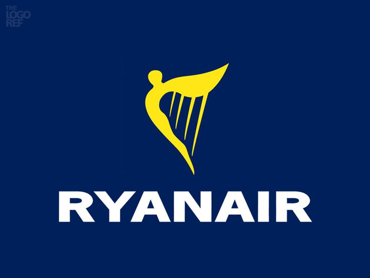

Telemetría Aérea y Control de Sector
Monitorización ADS-B, vectores de separación en tiempo real y parámetros telemáticos de vuelo.
CAPACIDAD SECTOR
84%
SEPARACIÓN MEDIA
7.2 NM
✓ Norma ISO-ICAO
TASA DE VECTORES
14 / min
Fluidez Óptima
SISTEMA ADS-B
99.9%
32 Transceptores
Plan de Vuelos, Telemetría y Vectores de Separación
| Vista | Callsign | Squawk | Aeronave | Origen ➔ Destino | Altitud (FL) | Velocidad (GS) | Mach | Vert. Speed | Fase | Vectorización |
|---|---|---|---|---|---|---|---|---|---|---|
| IBE3240 | 7321 |
Airbus A320 | BIO ➔ MAD | FL340 | 450 kts | M 0.78 | 0 ft/min | Crucero | ||
|
 |
RYR8112 | 2104 |
Boeing 737-800 | BCN ➔ BIO | FL120 | 280 kts | M 0.54 | -1200 ft/min | Descenso | |
| VLG2041 | 4210 |
Airbus A321 | BIO ➔ KEF | FL280 | 410 kts | M 0.72 | 0 ft/min | En Espera | ||

|
AEA1022 | 1204 |
Boeing 787-9 | HND ➔ BIO | FL180 | 320 kts | M 0.62 | -1800 ft/min | Aproximación | |
| AFR1430 | 5512 |
Airbus A350 | BIO ➔ SVQ | FL100 | 250 kts | M 0.48 | -800 ft/min | Aproximación | ||
| Total de vuelos monitorizados en tiempo real: 5 (Actualizado en tiempo real) | ||||||||||